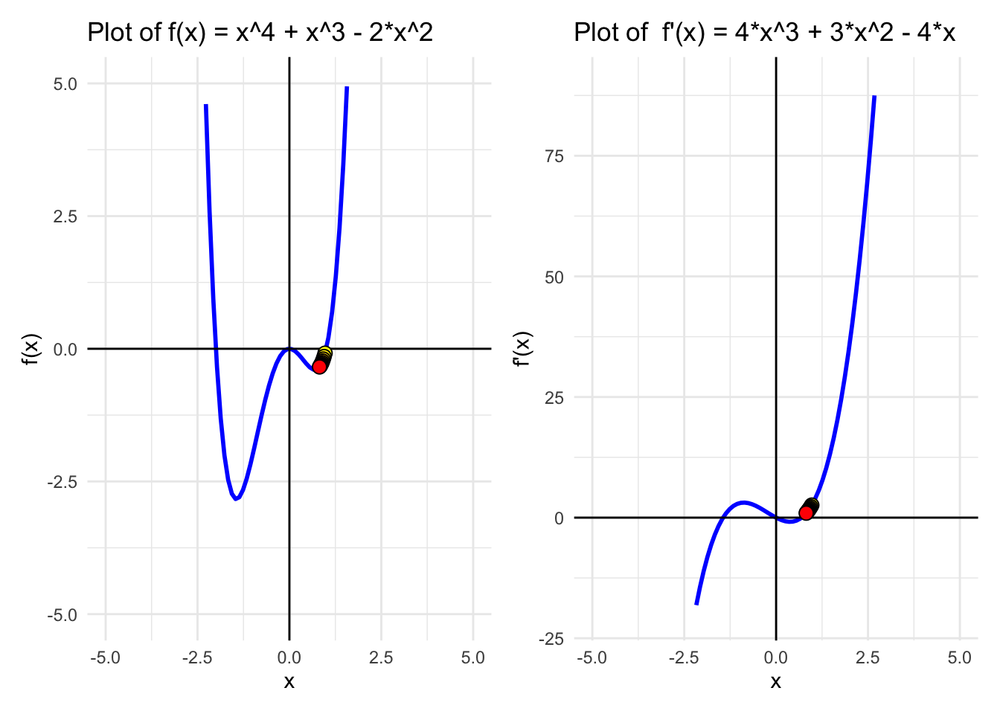
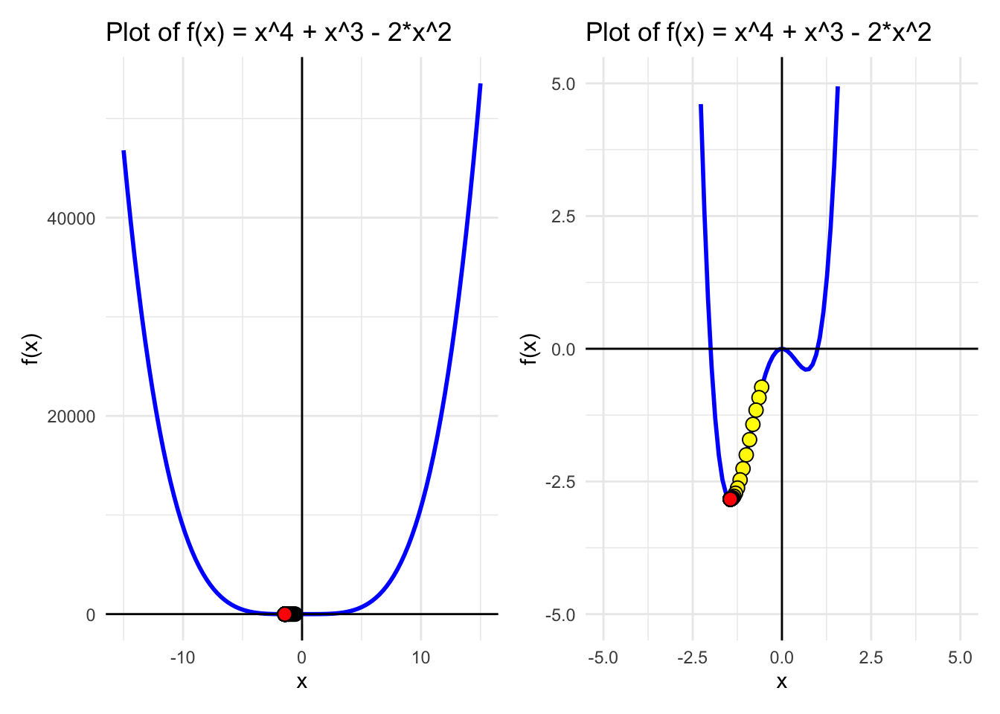
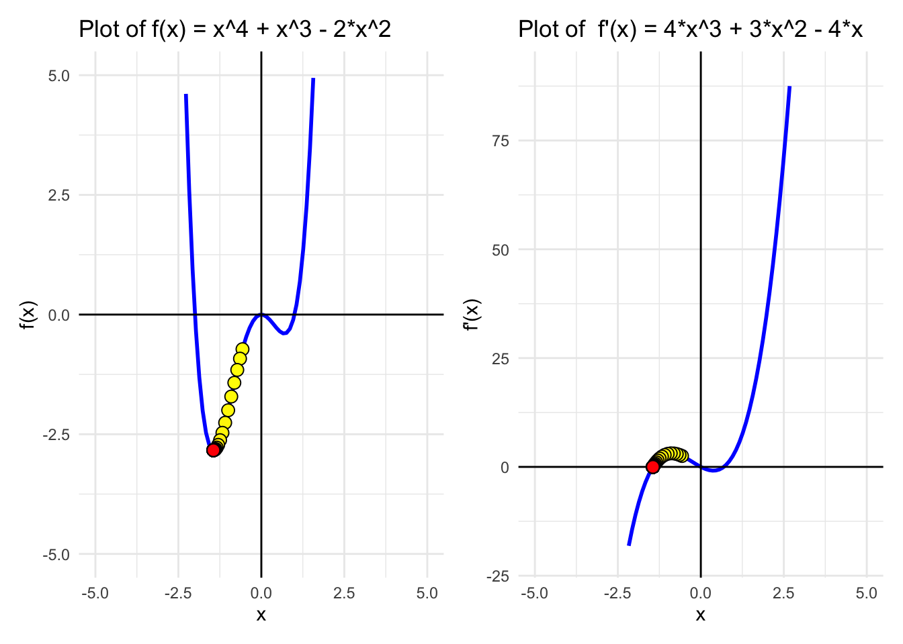
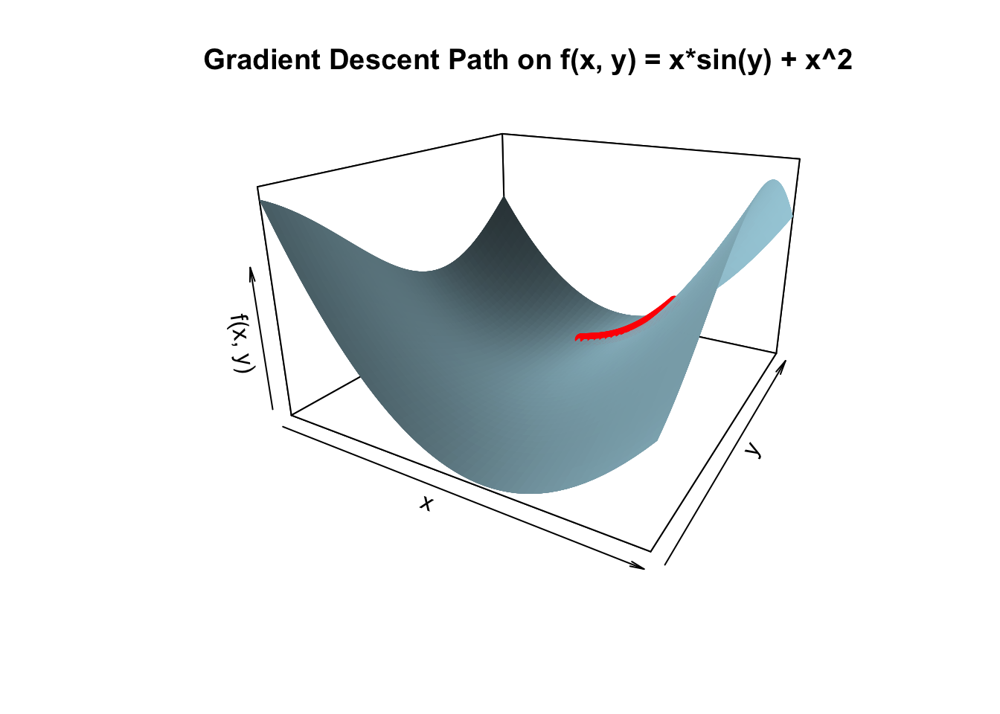
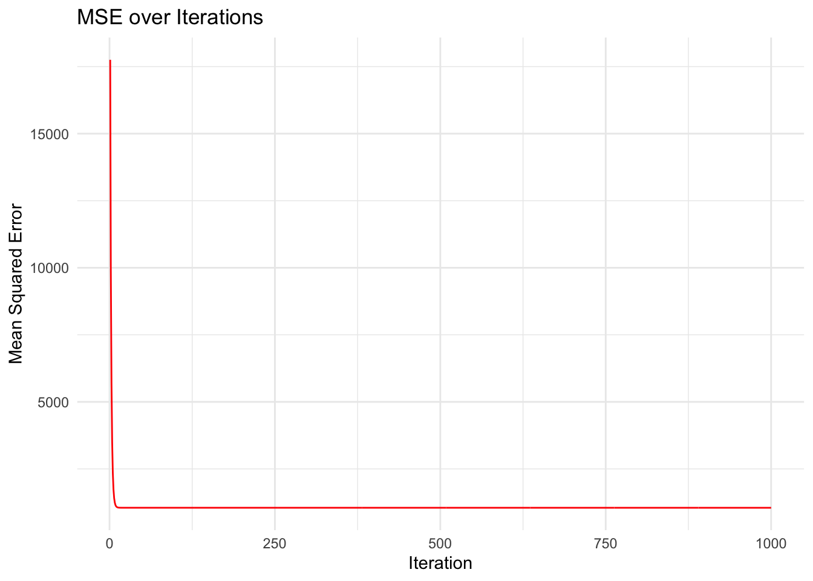

(4) Gradient Descent
Gradient descent is a foundational optimization technique widely used in machine learning to find the minimum of a function. The core idea is to iteratively adjust variables in the opposite direction of the gradient (slope) to minimize the function’s output.
The Gradient Descent Formula
The general update formula for gradient descent is:
\[ x_{n+1} = x_n - \alpha f'(x_n) \]
where:
- \(x_n\) is the current guess
- \(f'(x_n)\) is the gradient at \(x_n\)
- \(\alpha\) is the learning rate (a small positive constant that controls the step size)
The idea is that the steeper the slope, the larger the update, moving us closer to the minimum.
Single-Variable Gradient Descent
Let’s replicate the slides seen in class and minimize a single-variable function, \(f(x) = x^2\). Imagine we start with an initial guess that the minimum is at \(x = -4\) (although we know this is not the true minimum, from class we have seen this happens at \(x = 0\)). We will iteratively improve this guess by calculating the derivative (gradient) and adjusting the guess.
Understanding the Derivative’s Role
In gradient descent, the derivative (or gradient) tells us the slope of the function at any given point. Here’s the intuition:
If the derivative is positive: The function is sloping upwards, so we should move “downhill” by decreasing our guess.
If the derivative is negative: The function is sloping downwards, so we should move “downhill” by increasing our guess.
This approach ensures that we move towards the minimum at each step.
Example: Minimizing \(f(x) = x^2\)
Using function \(f(x) = x^2\), first we have to calculate the derivative of this function \(f'(x) = 2x\)
#Define the function and its derivative
f <- function(x) {
x^2
}
f_prime <- function(x) {
2* x
}This is how they look:
library(ggplot2)
# Create a sequence of x values
x_vals <- seq(-10, 10, length.out = 100)
# Compute y values for both functions
data <- data.frame(
x = x_vals,
f_x = f(x_vals),
f_prime_x = f_prime(x_vals)
)
head(data) x f_x f_prime_x
1 -10.000000 100.00000 -20.00000
2 -9.797980 96.00041 -19.59596
3 -9.595960 92.08244 -19.19192
4 -9.393939 88.24610 -18.78788
5 -9.191919 84.49138 -18.38384
6 -8.989899 80.81828 -17.97980library(patchwork)
A <- ggplot(data, aes(x = x)) +
geom_line(aes(y = f_x, color = "f(x) = x^2"), size = 1) +
#geom_line(aes(y = f_prime_x, color = "f'(x) = 2x"), size = 1) +
labs(title = "Plot of f(x) = x^2 ",
x = "x",
y = "f(x)") +
geom_hline(yintercept = 0, color = "black") + # Add horizontal line at y = 0
geom_vline(xintercept = 0, color = "black") +
scale_color_manual("", values = c("f(x) = x^2" = "blue", "f'(x) = 2x" = "red")) +
theme_minimal()Warning: Using `size` aesthetic for lines was deprecated in ggplot2 3.4.0.
ℹ Please use `linewidth` instead.B <- ggplot(data, aes(x = x)) +
#geom_line(aes(y = f_x, color = "f(x) = x^2"), size = 1) +
geom_line(aes(y = f_prime_x, color = "f'(x) = 2x"), size = 1) +
labs(title = "Plot of f'(x) = 2x",
x = "x",
y = "f'(x)") +
ylim(-20, 100) +
geom_hline(yintercept = 0, color = "black") + # Add horizontal line at y = 0
geom_vline(xintercept = 0, color = "black") +
scale_color_manual("", values = c("f(x) = x^2" = "blue", "f'(x) = 2x" = "red")) +
theme_minimal()
A + B
# Set initial values
alpha <- 0.8 # Learning rate
x <- -10 # Initial guess
x_store <- NULLAs previosuly explained, the general update formula for gradient descent is:
\[ x_{n+1} = x_n - \alpha f'(x_n) \]
As you can see, this code iteratively adjusts our guess \(x\) based on the gradient at each step, converging towards the minimum. To find the minimum of a function, gradient descent updates the current guess x_n by a step that depends on the gradient (slope) at x_n.
# Gradient descent loop
for (i in 1:10) {
gradient <- f_prime(x)
# Update parameters
x <- x - alpha * gradient
# Store values for plotting
x_store[i] <- x
cat("Step", i, ": x =", x, "f(x) =", f(x), "\n")
}Step 1 : x = 6 f(x) = 36
Step 2 : x = -3.6 f(x) = 12.96
Step 3 : x = 2.16 f(x) = 4.6656
Step 4 : x = -1.296 f(x) = 1.679616
Step 5 : x = 0.7776 f(x) = 0.6046618
Step 6 : x = -0.46656 f(x) = 0.2176782
Step 7 : x = 0.279936 f(x) = 0.07836416
Step 8 : x = -0.1679616 f(x) = 0.0282111
Step 9 : x = 0.100777 f(x) = 0.010156
Step 10 : x = -0.06046618 f(x) = 0.003656158 This code iteratively adjusts \(x\) based on the gradient at each step, converging towards the minimum of f(x).
Plotting it all together
Approximations <- data.frame(x = x_store, y = f(x_store), dy = f_prime(x_store)) %>%
add_rownames()# Assign a "darkening" groupWarning: `add_rownames()` was deprecated in dplyr 1.0.0.
ℹ Please use `tibble::rownames_to_column()` instead.Approximations$rowname <- as.numeric(Approximations$rowname )
A <- ggplot(data, aes(x = x)) +
geom_line(aes(y = f_x), color = "blue", size = 1) +
labs(title = "Plot of f(x) = x^2 ",
x = "x",
y = "f(x)") +
geom_hline(yintercept = 0, color = "black") + # Add horizontal line at y = 0
geom_vline(xintercept = 0, color = "black") +
geom_point(data = Approximations, aes(x = x, y = y, fill = rowname), size = 3,pch=21,colour = "black", show.legend = FALSE) +
scale_fill_gradient(low = "yellow", high = "red", na.value = NA) +
theme_minimal()
B <- ggplot(data, aes(x = x)) +
geom_line(aes(y = f_prime_x), color = "blue", size = 1) +
labs(title = "Plot of f'(x) = 2x",
x = "x",
y = "f'(x)") +
ylim(-20, 100) +
geom_hline(yintercept = 0, color = "black") + # Add horizontal line at y = 0
geom_vline(xintercept = 0, color = "black") +
geom_point(data = Approximations, aes(x = x, y = dy, fill = rowname), size = 3,pch=21,colour = "black", show.legend = FALSE) +
scale_fill_gradient(low = "yellow", high = "red", na.value = NA) +
theme_minimal()
A + B
A larger learning rate \(\alpha\) can make the steps too large, causing the algorithm to “overshoot” the minimum, while a smaller learning rate may result in slow convergence.
Your turn!
Use gradient descent to minimize the following functions. For each function, start with different initial guesses and observe how the algorithm converges to a minimum.
\[ f(x) = x^2 + 3x + 5 \]
# Define the function and its derivative
f <- function(x) {
x^2 + 3*x + 5
}
f_prime <- function(x) {
2*x + 3
}Why not plot it?
# Create a sequence of x values
x_vals <- seq(-15, 15, length.out = 100)
# Compute y values for both functions
data <- data.frame(
x = x_vals,
f_x = f(x_vals),
f_prime_x = f_prime(x_vals)
)
head(data) x f_x f_prime_x
1 -15.00000 185.0000 -27.00000
2 -14.69697 176.9100 -26.39394
3 -14.39394 169.0037 -25.78788
4 -14.09091 161.2810 -25.18182
5 -13.78788 153.7420 -24.57576
6 -13.48485 146.3866 -23.96970library(patchwork)
A <- ggplot(data, aes(x = x)) +
geom_line(aes(y = f_x, color = "f(x) = x^2 + 3*x + 5"), size = 1) +
#geom_line(aes(y = f_prime_x, color = "f'(x) = 2x + 1"), size = 1) +
labs(title = "Plot of f(x) = x^2 + 3*x + 5",
x = "x",
y = "f(x)") +
geom_hline(yintercept = 0, color = "black") + # Add horizontal line at y = 0
geom_vline(xintercept = 0, color = "black") +
scale_color_manual("", values = c("f(x) = x^2 + 3*x + 5" = "blue")) +
theme_minimal()
B <- ggplot(data, aes(x = x)) +
#geom_line(aes(y = f_x, color = "f(x) = x^2"), size = 1) +
geom_line(aes(y = f_prime_x, color = "f'(x) = 2*x + 3"), size = 1) +
labs(title = "Plot of f'(x) = 2*x + 3",
x = "x",
y = "f'(x)") +
ylim(-30, 100) +
geom_hline(yintercept = 0, color = "black") + # Add horizontal line at y = 0
geom_vline(xintercept = 0, color = "black") +
scale_color_manual("", values = c( "f'(x) = 2*x + 3" = "red")) +
theme_minimal()
A + B
# Parameters
alpha <- 0.01
x <- 2 # Initial guess# Gradient descent loop
for (i in 1:10) {
x <- x - alpha * f_prime(x)
cat("Step", i, ": x =", x, "f(x) =", f(x), "\n")
}Step 1 : x = 1.93 f(x) = 14.5149
Step 2 : x = 1.8614 f(x) = 14.04901
Step 3 : x = 1.794172 f(x) = 13.60157
Step 4 : x = 1.728289 f(x) = 13.17185
Step 5 : x = 1.663723 f(x) = 12.75914
Step 6 : x = 1.600448 f(x) = 12.36278
Step 7 : x = 1.538439 f(x) = 11.98211
Step 8 : x = 1.477671 f(x) = 11.61652
Step 9 : x = 1.418117 f(x) = 11.26541
Step 10 : x = 1.359755 f(x) = 10.9282 Part 3: Local vs Global Minima
Gradient descent may not always reach the global minimum, especially if the function has multiple minima. The algorithm might “get stuck” in a local minimum, particularly if the initial guess is close to one of these minimum.
Consider the function \(f(x) = x^4 + x^3 - 2x^2\), which has both local and global minima.
f <- function(x) {
x^4 + x^3 - 2*(x^2)
}
f_prime <- function(x){
4*(x^3) + 3*(x^2) - 4*x
}Parameters
alpha <- 0.01
x <- 1
x_store <- NULLfor (i in 1:10) {
x <- x - alpha *f_prime(x)
x_store[i] <- x
cat("Step", i, ": x =", x, "f(x) =", f(x), "\n")
}Step 1 : x = 0.97 f(x) = -0.08383419
Step 2 : x = 0.9440661 f(x) = -0.1467667
Step 3 : x = 0.9214345 f(x) = -0.1948753
Step 4 : x = 0.9015272 f(x) = -0.2322205
Step 5 : x = 0.8838971 f(x) = -0.2615931
Step 6 : x = 0.8681921 f(x) = -0.2849583
Step 7 : x = 0.8541308 f(x) = -0.303729
Step 8 : x = 0.841485 f(x) = -0.3189397
Step 9 : x = 0.8300673 f(x) = -0.3313601
Step 10 : x = 0.8197226 f(x) = -0.3415714 Approximations <- data.frame(x = x_store, y = f(x_store), dy = f_prime(x_store)) %>%
add_rownames()# Assign a "darkening" group)Warning: `add_rownames()` was deprecated in dplyr 1.0.0.
ℹ Please use `tibble::rownames_to_column()` instead.Approximations$rowname <- as.numeric(Approximations$rowname )
# Create a sequence of x values
x_vals <- seq(-15, 15, length.out = 100)
# Compute y values for both functions
data <- data.frame(
x = x_vals,
f_x = f(x_vals),
f_prime_x = f_prime(x_vals)
)
head(data) x f_x f_prime_x
1 -15.00000 46800.00 -12765.000
2 -14.69697 43049.84 -11991.445
3 -14.39394 39529.24 -11249.729
4 -14.09091 36228.67 -10539.185
5 -13.78788 33138.78 -9859.144
6 -13.48485 30250.42 -9208.938A_big <- ggplot(data, aes(x = x)) +
geom_line(aes(y = f_x), color = "blue", size = 1) +
labs(title = "Plot of f(x) = x^4 + x^3 - 2*x^2 ",
x = "x",
y = "f(x)") +
geom_hline(yintercept = 0, color = "black") + # Add horizontal line at y = 0
geom_vline(xintercept = 0, color = "black") +
geom_point(data = Approximations, aes(x = x, y = y, fill = rowname), size = 3,pch=21,colour = "black", show.legend = FALSE) +
scale_fill_gradient(low = "yellow", high = "red", na.value = NA) +
theme_minimal()
# Create a sequence of x values
x_vals <- seq(-5, 5, length.out = 100)
# Compute y values for both functions
data <- data.frame(
x = x_vals,
f_x = f(x_vals),
f_prime_x = f_prime(x_vals)
)
head(data) x f_x f_prime_x
1 -5.000000 450.0000 -405.0000
2 -4.898990 410.4284 -378.7088
3 -4.797980 373.4548 -353.5559
4 -4.696970 338.9655 -329.5168
5 -4.595960 306.8491 -306.5666
6 -4.494949 276.9970 -284.6806A <- ggplot(data, aes(x = x)) +
geom_line(aes(y = f_x), color = "blue", size = 1) +
labs(title = "Plot of f(x) = x^4 + x^3 - 2*x^2 ",
x = "x",
y = "f(x)") +
ylim(-5, 5) +
geom_hline(yintercept = 0, color = "black") + # Add horizontal line at y = 0
geom_vline(xintercept = 0, color = "black") +
geom_point(data = Approximations, aes(x = x, y = y, fill = rowname), size = 3,pch=21,colour = "black", show.legend = FALSE) +
scale_fill_gradient(low = "yellow", high = "red", na.value = NA) +
theme_minimal()
B <- ggplot(data, aes(x = x)) +
geom_line(aes(y = f_prime_x), color = "blue", size = 1) +
labs(title = "Plot of f'(x) = 4*x^3 + 3*x^2 - 4*x",
x = "x",
y = "f'(x)") +
ylim(-20, 90) +
geom_hline(yintercept = 0, color = "black") + # Add horizontal line at y = 0
geom_vline(xintercept = 0, color = "black") +
geom_point(data = Approximations, aes(x = x, y = dy, fill = rowname), size = 3,pch=21,colour = "black", show.legend = FALSE) +
scale_fill_gradient(low = "yellow", high = "red", na.value = NA) +
theme_minimal()
(A_big | A) Warning: Removed 61 rows containing missing values or values outside the scale range
(`geom_line()`).
(A | B )Warning: Removed 61 rows containing missing values or values outside the scale range
(`geom_line()`).Warning: Removed 51 rows containing missing values or values outside the scale range
(`geom_line()`).
We see this function has 2 minimums! One is a local minimim and the other the global minimum. Depending on where we start (intialization point) we will end up in one or the other.
Exercise! Try different initial guesses, record which initial guess leads to global minimum.
Parameters
alpha <- 0.03
x <- -0.5
x_store <- NULL
number_iterations <- 100for (i in 1:number_iterations) {
x <- x - alpha *f_prime(x)
x_store[i] <- x
cat("Step", i, ": x =", x, "f(x) =", f(x), "\n")
}Step 1 : x = -0.5675 f(x) = -0.7231592
Step 2 : x = -0.642653 f(x) = -0.920852
Step 3 : x = -0.7250915 f(x) = -1.156317
Step 4 : x = -0.813674 f(x) = -1.424506
Step 5 : x = -0.9062562 f(x) = -1.712375
Step 6 : x = -0.9996069 f(x) = -1.998821
Step 7 : x = -1.08963 f(x) = -2.258633
Step 8 : x = -1.171997 f(x) = -2.470269
Step 9 : x = -1.243079 f(x) = -2.62357
Step 10 : x = -1.300817 f(x) = -2.722108
Step 11 : x = -1.345069 f(x) = -2.778691
Step 12 : x = -1.377285 f(x) = -2.808136
Step 13 : x = -1.39977 f(x) = -2.822284
Step 14 : x = -1.414967 f(x) = -2.828682
Step 15 : x = -1.425001 f(x) = -2.831453
Step 16 : x = -1.43152 f(x) = -2.832617
Step 17 : x = -1.43571 f(x) = -2.833097
Step 18 : x = -1.438384 f(x) = -2.833291
Step 19 : x = -1.440082 f(x) = -2.83337
Step 20 : x = -1.441158 f(x) = -2.833402
Step 21 : x = -1.441838 f(x) = -2.833414
Step 22 : x = -1.442267 f(x) = -2.833419
Step 23 : x = -1.442538 f(x) = -2.833421
Step 24 : x = -1.442709 f(x) = -2.833422
Step 25 : x = -1.442817 f(x) = -2.833422
Step 26 : x = -1.442885 f(x) = -2.833422
Step 27 : x = -1.442928 f(x) = -2.833422
Step 28 : x = -1.442955 f(x) = -2.833422
Step 29 : x = -1.442972 f(x) = -2.833422
Step 30 : x = -1.442982 f(x) = -2.833422
Step 31 : x = -1.442989 f(x) = -2.833422
Step 32 : x = -1.442993 f(x) = -2.833422
Step 33 : x = -1.442996 f(x) = -2.833422
Step 34 : x = -1.442998 f(x) = -2.833422
Step 35 : x = -1.442999 f(x) = -2.833422
Step 36 : x = -1.442999 f(x) = -2.833422
Step 37 : x = -1.443 f(x) = -2.833422
Step 38 : x = -1.443 f(x) = -2.833422
Step 39 : x = -1.443 f(x) = -2.833422
Step 40 : x = -1.443 f(x) = -2.833422
Step 41 : x = -1.443 f(x) = -2.833422
Step 42 : x = -1.443 f(x) = -2.833422
Step 43 : x = -1.443 f(x) = -2.833422
Step 44 : x = -1.443 f(x) = -2.833422
Step 45 : x = -1.443 f(x) = -2.833422
Step 46 : x = -1.443 f(x) = -2.833422
Step 47 : x = -1.443 f(x) = -2.833422
Step 48 : x = -1.443 f(x) = -2.833422
Step 49 : x = -1.443 f(x) = -2.833422
Step 50 : x = -1.443 f(x) = -2.833422
Step 51 : x = -1.443 f(x) = -2.833422
Step 52 : x = -1.443 f(x) = -2.833422
Step 53 : x = -1.443 f(x) = -2.833422
Step 54 : x = -1.443 f(x) = -2.833422
Step 55 : x = -1.443 f(x) = -2.833422
Step 56 : x = -1.443 f(x) = -2.833422
Step 57 : x = -1.443 f(x) = -2.833422
Step 58 : x = -1.443 f(x) = -2.833422
Step 59 : x = -1.443 f(x) = -2.833422
Step 60 : x = -1.443 f(x) = -2.833422
Step 61 : x = -1.443 f(x) = -2.833422
Step 62 : x = -1.443 f(x) = -2.833422
Step 63 : x = -1.443 f(x) = -2.833422
Step 64 : x = -1.443 f(x) = -2.833422
Step 65 : x = -1.443 f(x) = -2.833422
Step 66 : x = -1.443 f(x) = -2.833422
Step 67 : x = -1.443 f(x) = -2.833422
Step 68 : x = -1.443 f(x) = -2.833422
Step 69 : x = -1.443 f(x) = -2.833422
Step 70 : x = -1.443 f(x) = -2.833422
Step 71 : x = -1.443 f(x) = -2.833422
Step 72 : x = -1.443 f(x) = -2.833422
Step 73 : x = -1.443 f(x) = -2.833422
Step 74 : x = -1.443 f(x) = -2.833422
Step 75 : x = -1.443 f(x) = -2.833422
Step 76 : x = -1.443 f(x) = -2.833422
Step 77 : x = -1.443 f(x) = -2.833422
Step 78 : x = -1.443 f(x) = -2.833422
Step 79 : x = -1.443 f(x) = -2.833422
Step 80 : x = -1.443 f(x) = -2.833422
Step 81 : x = -1.443 f(x) = -2.833422
Step 82 : x = -1.443 f(x) = -2.833422
Step 83 : x = -1.443 f(x) = -2.833422
Step 84 : x = -1.443 f(x) = -2.833422
Step 85 : x = -1.443 f(x) = -2.833422
Step 86 : x = -1.443 f(x) = -2.833422
Step 87 : x = -1.443 f(x) = -2.833422
Step 88 : x = -1.443 f(x) = -2.833422
Step 89 : x = -1.443 f(x) = -2.833422
Step 90 : x = -1.443 f(x) = -2.833422
Step 91 : x = -1.443 f(x) = -2.833422
Step 92 : x = -1.443 f(x) = -2.833422
Step 93 : x = -1.443 f(x) = -2.833422
Step 94 : x = -1.443 f(x) = -2.833422
Step 95 : x = -1.443 f(x) = -2.833422
Step 96 : x = -1.443 f(x) = -2.833422
Step 97 : x = -1.443 f(x) = -2.833422
Step 98 : x = -1.443 f(x) = -2.833422
Step 99 : x = -1.443 f(x) = -2.833422
Step 100 : x = -1.443 f(x) = -2.833422 Approximations <- data.frame(x = x_store, y = f(x_store), dy = f_prime(x_store)) %>%
add_rownames()# Assign a "darkening" group)Warning: `add_rownames()` was deprecated in dplyr 1.0.0.
ℹ Please use `tibble::rownames_to_column()` instead.Approximations$rowname <- as.numeric(Approximations$rowname )
# Create a sequence of x values
x_vals <- seq(-15, 15, length.out = 100)
# Compute y values for both functions
data <- data.frame(
x = x_vals,
f_x = f(x_vals),
f_prime_x = f_prime(x_vals)
)
head(data) x f_x f_prime_x
1 -15.00000 46800.00 -12765.000
2 -14.69697 43049.84 -11991.445
3 -14.39394 39529.24 -11249.729
4 -14.09091 36228.67 -10539.185
5 -13.78788 33138.78 -9859.144
6 -13.48485 30250.42 -9208.938A_big <- ggplot(data, aes(x = x)) +
geom_line(aes(y = f_x), color = "blue", size = 1) +
labs(title = "Plot of f(x) = x^4 + x^3 - 2*x^2 ",
x = "x",
y = "f(x)") +
geom_hline(yintercept = 0, color = "black") + # Add horizontal line at y = 0
geom_vline(xintercept = 0, color = "black") +
geom_point(data = Approximations, aes(x = x, y = y, fill = rowname), size = 3,pch=21,colour = "black", show.legend = FALSE) +
scale_fill_gradient(low = "yellow", high = "red", na.value = NA) +
theme_minimal()
# Create a sequence of x values
x_vals <- seq(-5, 5, length.out = 100)
# Compute y values for both functions
data <- data.frame(
x = x_vals,
f_x = f(x_vals),
f_prime_x = f_prime(x_vals)
)
head(data) x f_x f_prime_x
1 -5.000000 450.0000 -405.0000
2 -4.898990 410.4284 -378.7088
3 -4.797980 373.4548 -353.5559
4 -4.696970 338.9655 -329.5168
5 -4.595960 306.8491 -306.5666
6 -4.494949 276.9970 -284.6806A <- ggplot(data, aes(x = x)) +
geom_line(aes(y = f_x), color = "blue", size = 1) +
labs(title = "Plot of f(x) = x^4 + x^3 - 2*x^2 ",
x = "x",
y = "f(x)") +
ylim(-5, 5) +
geom_hline(yintercept = 0, color = "black") + # Add horizontal line at y = 0
geom_vline(xintercept = 0, color = "black") +
geom_point(data = Approximations, aes(x = x, y = y, fill = rowname), size = 3,pch=21,colour = "black", show.legend = FALSE) +
scale_fill_gradient(low = "yellow", high = "red", na.value = NA) +
theme_minimal()
B <- ggplot(data, aes(x = x)) +
geom_line(aes(y = f_prime_x), color = "blue", size = 1) +
labs(title = "Plot of f'(x) = 4*x^3 + 3*x^2 - 4*x",
x = "x",
y = "f'(x)") +
ylim(-20, 90) +
geom_hline(yintercept = 0, color = "black") + # Add horizontal line at y = 0
geom_vline(xintercept = 0, color = "black") +
geom_point(data = Approximations, aes(x = x, y = dy, fill = rowname), size = 3,pch=21,colour = "black", show.legend = FALSE) +
scale_fill_gradient(low = "yellow", high = "red", na.value = NA) +
theme_minimal()
(A_big | A) Warning: Removed 61 rows containing missing values or values outside the scale range
(`geom_line()`).
(A | B )Warning: Removed 61 rows containing missing values or values outside the scale range
(`geom_line()`).Warning: Removed 51 rows containing missing values or values outside the scale range
(`geom_line()`).
What happens at initial point x = 0? And if you increase the learning rate a lot? Does it mean it gets to the minimum faster? But which one? What is another parameter you can modify?….. ITERATIONS!
#Try out any other modification!As you have seen:
The choice of learning rate \(\alpha\) is crucial:
If \(\alpha\) too large, the algorithm might oscillate and fail to converge.
If \(\alpha\) too slow, requiring more iterations.
Example of high learning rate:
Setting \(\alpha = 0.5\)
Part 4: Multivariable Gradient Descent
Multivariable gradient descent is an extension of the single-variable case. Instead of using a single derivative, we calculate the gradient vector, which consists of the partial derivatives of the function with respect to each variable.
Consider the function:
\[ f(x, y) = xsin(y) + x^2 \]
The gradient of this function is:
\[ \nabla f(x, y) = \left\langle \frac{\partial f}{\partial x}, \frac{\partial f}{\partial y} \right\rangle = \langle \sin(y) + 2x, x \cos(y) \rangle \]
Let’s apply gradient descent starting from an initial guess of \(\vec{x} = (1, 2)\) with a learning rate of \(\alpha = 0.01\)
Another way to do it in R is using the function Deriv()
library(Deriv)
# Define the function f(x, y) = x* sin(y) + x^2
f <- function(x, y) {
x*sin(y) + x^2
}
# Compute the gradient symbolically (exact expressions)
grad_f <- Deriv(expression(x*sin(y) + x^2), c("x", "y"))
print(grad_f)expression(c(x = 2 * x + sin(y), y = x * cos(y)))#expression(c(x = 2 * x + sin(y), y = x * cos(y))) Computes the partial derivatives for you!!!!!
gradient <- function(x, y) {
eval(grad_f)
}As you can see is the partial derivatives above written, directly calculated
# Initial parameters
alpha <- 0.01 # Learning rate
iterations <- 100 # Number of iterations
x <- 1 # Initial guess for x
y <- 2 # Initial guess for y
# Store results for plotting
results <- data.frame(Iteration = 0, x = x, y = y, f_value = f(x, y))
# Gradient descent loopfor (i in 1:iterations) {
grad <- gradient(x = x, y = y)
# Evaluate gradient
x <- x - alpha* grad[1]
y <- y - alpha * grad[2]
results <- rbind(results, data.frame(Iteration = i, x = x, y = y, f_value = f(x, y)))
# would be the same as:
#x <- x - alpha*f_x(x, y)
#y <- y - alpha* f_y(x, y)
}
# Display first few iterations
head(results) Iteration x y f_value
1 0 1.0000000 2.000000 1.909297
x 1 0.9709070 2.004161 1.823815
x1 2 0.9424133 2.008239 1.741817
x2 3 0.9145067 2.012231 1.663164
x3 4 0.8871751 2.016138 1.587723
x4 5 0.8604070 2.019960 1.515364#Generate grid data for 3D surface plot
x_vals <- seq(-2, 2, length.out = 50)
y_vals <- seq(-1, 3, length.out = 50)
z_vals <- outer(x_vals, y_vals, Vectorize(f)) #evaluate x and y values in function f
# 3D plot
persp3D(x = x_vals, y = y_vals, z = z_vals, col = "lightblue", theta = 30, phi = 20, expand = 0.6, shade = 0.5, main = "Gradient Descent Path on f(x, y) = x*sin(y) + x^2", xlab = "x", ylab = "y", zlab = "f(x, y)")
# Overlay gradient descent path
points3D(results$x, results$y, results$f_value, col = "red", pch = 19, add = TRUE)
lines3D(results$x, results$y, results$f_value, col = "red", add = TRUE)
As expected, the value of the function is being minimized at each iteration!
# Plot the value of f(x, y) over iterations
ggplot(results, aes(x = Iteration, y = f_value)) + geom_line(color = "blue") + labs( title = "Convergence of Gradient Descent on f(x, y) = x*sin(y) + x^2", x = "Iteration", y = "f(x, y)" ) + theme_minimal()
Final Remarks
Gradient descent is a versatile optimization technique, but it’s not without limitations:
It may converge to local minima rather than the global minimum. It is sensitive to the choice of learning rate and initial guess.
Variants of gradient descent, like stochastic gradient descent (SGD) and momentum-based methods, are often used to address these issues in large-scale machine learning tasks. Understanding and experimenting with gradient descent is crucial for developing an intuition about optimization in machine learning and algorithms.
Try it out with our own MSE, from the previous exercises
# Gradient descent parameters
alpha <- 0.0001 # Learning rate
iterations <- 1000 # Number of iterations
m <- -3 # Initial guess for slope
c <- 55 # Initial guess for intercept
# Lists to store m, c, and MSE values for plotting
m_path <- numeric(iterations)
c_path <- numeric(iterations)
mse_history <- numeric(iterations)# Define the MSE function
mse <- function(m, c, x, y) {
y_pred <- m * x + c
mean((y - y_pred)^2)
#same thing: (1 / n) * sum((y - (m * x + c))^2)
}
# Define the gradients of MSE with respect to m and c
mse_gradient_m <- function(m, c, x, y) {
-2 / length(y) * sum(x * (y - (m * x + c)))
}
mse_gradient_c <- function(m, c, x, y) {
-2 / length(y) * sum(y - (m * x + c))
}
#Remember can also apply the Deriv function
grad_f <- Deriv(expression((1 / n)* sum((y - (m * x + c))^2)), c("m", "c"))
print(grad_f)expression({
.e2 <- y - (c + m * x)
c(m = sum(-(2 * (x * .e2)))/n, c = sum(-(2 * .e2))/n)
})Unsure where the derivatives come from or how to calculate them?Go to the OLS_Derivation exercise.
Now, lets perform gradient descent:
# Perform gradient descent
for (i in 1:iterations) {
# Compute gradients
grad_m <- mse_gradient_m(m, c, x, y)
grad_c <- mse_gradient_c(m, c, x, y)
# Update parameters
m <- m - alpha * grad_m
c <- c - alpha * grad_c
# Store values for plotting
m_path[i] <- m
c_path[i] <- c
mse_history[i] <- mse(m, c, x, y)
# Print progress every 100 iterations
if (i %% 100 == 0) {
cat("Iteration:", i, "Slope (m):", m, "Intercept (c):", c, "MSE:", mse_history[i], "\n")
}
}Iteration: 100 Slope (m): 1.807502 Intercept (c): 55.15779 MSE: 1051.732
Iteration: 200 Slope (m): 1.806631 Intercept (c): 55.19157 MSE: 1051.618
Iteration: 300 Slope (m): 1.805762 Intercept (c): 55.22528 MSE: 1051.505
Iteration: 400 Slope (m): 1.804895 Intercept (c): 55.25893 MSE: 1051.391
Iteration: 500 Slope (m): 1.804029 Intercept (c): 55.29252 MSE: 1051.278
Iteration: 600 Slope (m): 1.803165 Intercept (c): 55.32605 MSE: 1051.166
Iteration: 700 Slope (m): 1.802302 Intercept (c): 55.35952 MSE: 1051.054
Iteration: 800 Slope (m): 1.801441 Intercept (c): 55.39293 MSE: 1050.942
Iteration: 900 Slope (m): 1.800581 Intercept (c): 55.42627 MSE: 1050.831
Iteration: 1000 Slope (m): 1.799723 Intercept (c): 55.45956 MSE: 1050.72 Optimized parameters:
# Plot the data points and the fitted line
ggplot(data_subset, aes(x = age, y = glucose)) +
geom_point() +
geom_abline(intercept = c, slope = m, color = "blue", size = 1) +
labs(title = "Linear Fit using Gradient Descent", x = "Age", y = "Glucose") +
theme_minimal()
# Plot MSE over iterations
mse_df <- data.frame(iteration = 1:iterations, MSE = mse_history)
ggplot(mse_df, aes(x = iteration, y = MSE)) +
geom_line(color = "red") +
labs(title = "MSE over Iterations", x = "Iteration", y = "Mean Squared Error") +
theme_minimal()
# Create a grid of values for m and c
m_values <- seq(-5, 5, length.out = 50)
c_values <- seq(0, 200, length.out = 50)
# Initialize a matrix to store MSE values
mse_matrix <- outer(m_values, c_values, Vectorize(function(m, c) mse(m, c, x, y)))
# Plot the MSE surface
persp3D(x = m_values, y = c_values, z = mse_matrix,
theta = 45, phi = 0,
xlab = "Slope (m)", ylab = "Intercept (c)", zlab = "MSE",
main = "MSE Surface with Gradient Descent Path",ticktype = "detailed" )
# Add the gradient descent path
points3D(m_path, c_path, z = sapply(1:iterations, function(i) mse(m_path[i], c_path[i], x, y)),
col = "red", pch = 20, add = TRUE, cex = 0.5)
Exercise Questions
- Experiment with the Learning Rate Try changing the value of alpha (learning rate) to see its effect on convergence. Question: What happens if alpha is too high? Does the MSE converge smoothly, or does it oscillate? Question: What happens if alpha is too low? How does it affect the number of iterations required to reach a stable value?
- Change the Initial Guess Try different initial values for m. For example, use m = 5 or m = -3. Question: Does the algorithm converge to the same solution? How does the initial value of m affect the convergence?
- Extend to Optimize Both m and c Modify the code to perform gradient descent on both the slope (m) and intercept (c). Hint: You’ll need to add a derivative function for c and update c in each iteration as well. Question: How does optimizing both m and c simultaneously compare to optimizing only m?